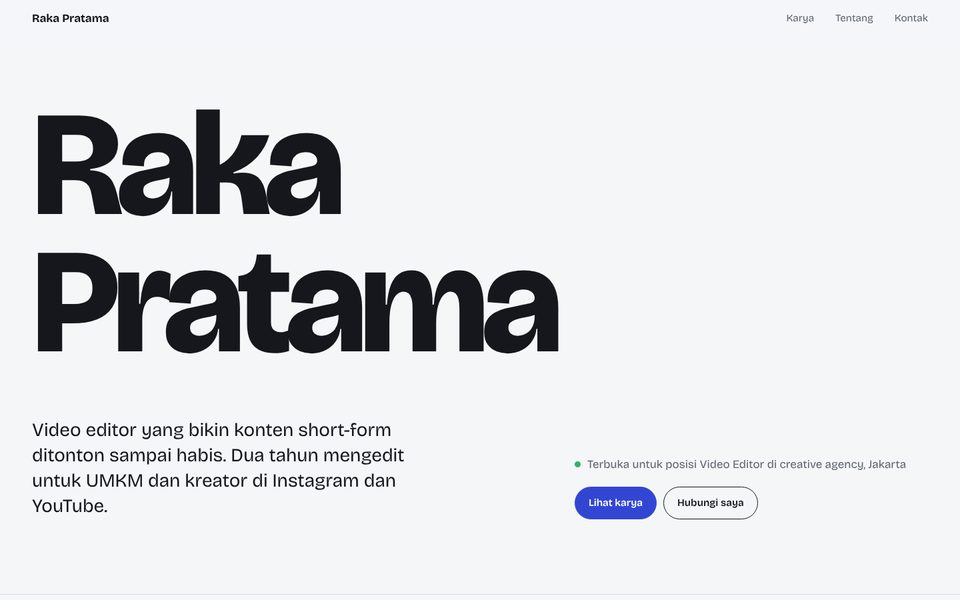
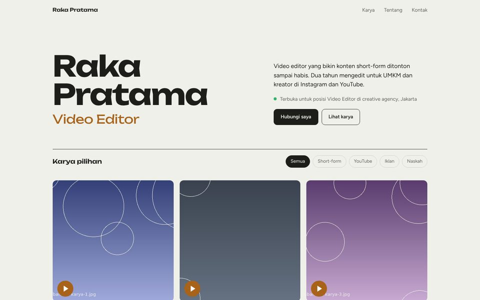
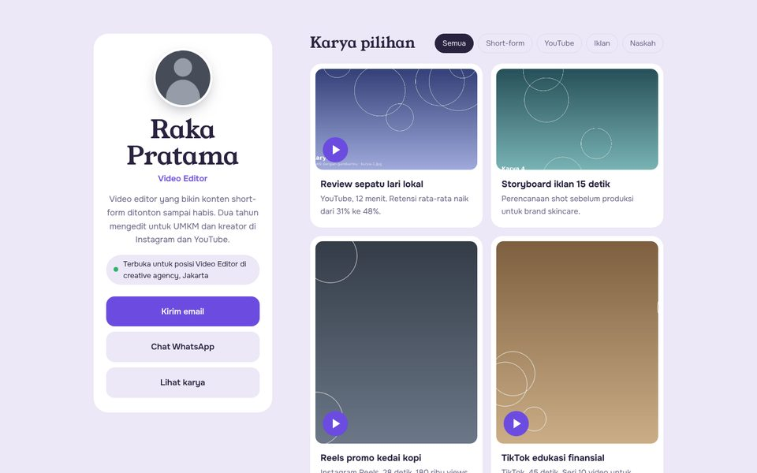
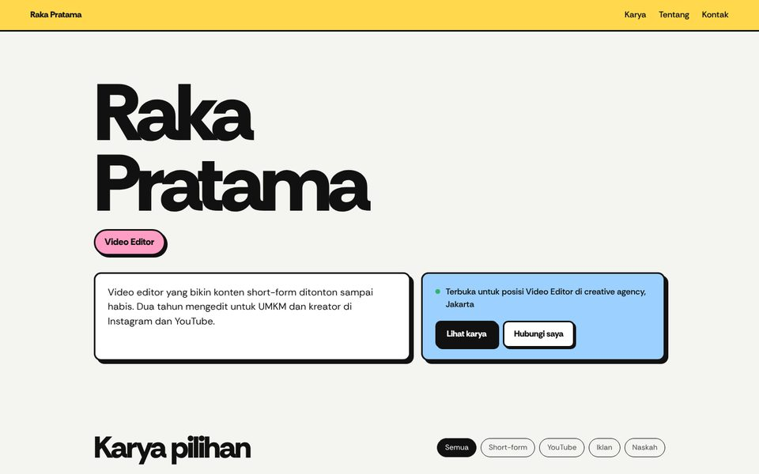
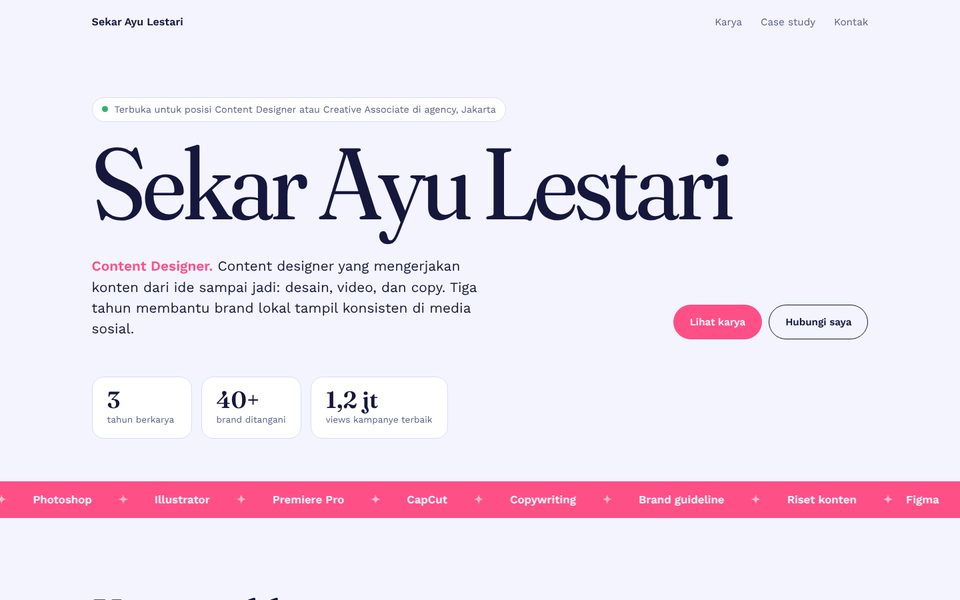
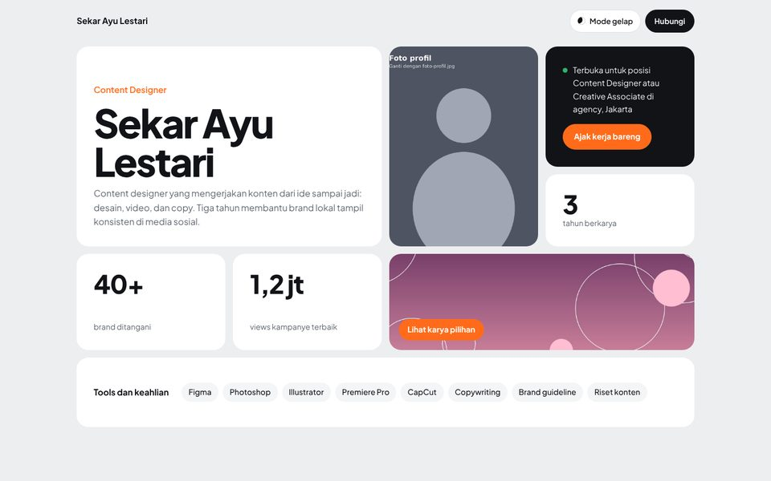
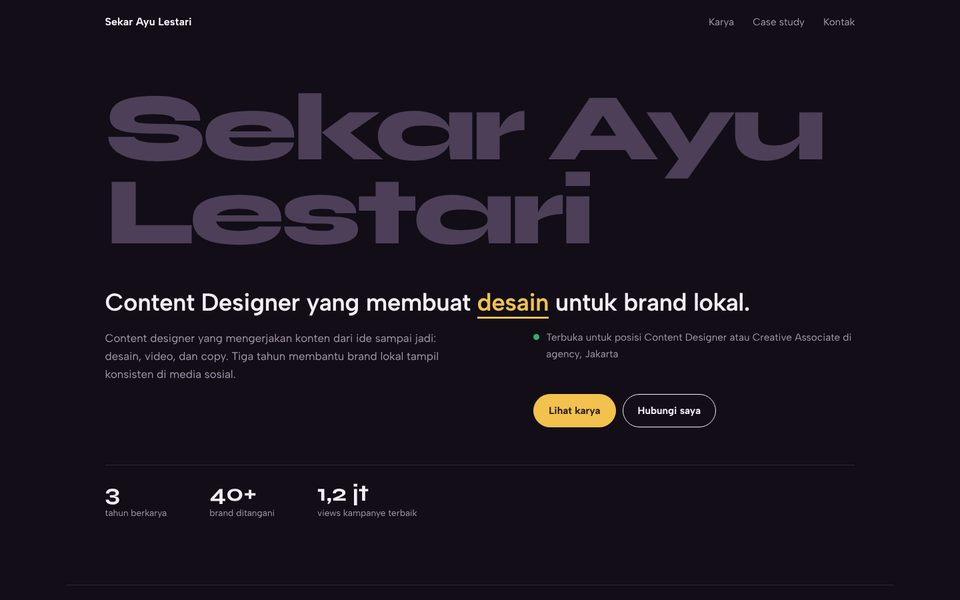

Nama Besar Basic
Nama tampil besar di atas, karya tersusun bertingkat. Bersih dan percaya diri.
Lihat cuplikanJasa website portofolio untuk video editor, desainer, dan penulis
Kami susun karyamu dari kacamata orang yang setiap hari menyeleksi kandidat kreatif: bukan cuma hasil akhirnya, tapi juga cara berpikirmu. Siap dibagikan dalam satu link.
Dikerjakan langsung oleh Creative Director dengan 5+ tahun pengalaman merekrut dan memimpin tim kreatif.
Karya numpuk di Google Drive, Instagram, dan YouTube. HRD harus membuka banyak link dan sering harus minta akses dulu.
Yang dicari agency adalah proses berpikir. Tanpa cerita di balik karya, kemampuanmu terlihat sama dengan kandidat lain.
Portofolio dari template umum mudah dilupakan, padahal kesan pertama menentukan kamu dipanggil interview atau tidak.
Klik untuk melihat cuplikan tiap template. Demo lengkap kami kirim lewat WhatsApp.
Rapi, ringan, dan fokus ke karya.

Nama tampil besar di atas, karya tersusun bertingkat. Bersih dan percaya diri.
Lihat cuplikan

Gaya link-in-bio, paling nyaman dibuka dari bio Instagram atau TikTok.
Lihat cuplikan
Interaktif, dengan 2 case study dan slider sebelum/sesudah.



Polaroid yang bisa digeser dan timeline case study yang terisi saat di-scroll.
Lihat cuplikanHarga perkenalan untuk klien pertama Jejak Karya.
Untuk yang karyanya sudah kuat dan butuh etalase rapi.
Rp500rbRp350rb
Selesai dalam 4 hari kerja
Rekomendasi
Untuk yang mau dilirik agency.
Rp1,3jtRp900rb
Selesai dalam 7 hari kerja
Untuk yang mau paket lengkap personal branding.
Rp2,5jtRp2jt
Selesai dalam 10 hari kerja
Untuk kebutuhan di luar paket.
Sesuai kebutuhan
Selesai dalam waktu sesuai cakupan
Timeline dihitung setelah DP, folder karya, dan form diterima.
Ceritakan bidang dan target kerjamu lewat WhatsApp. Kami bantu pilih paket yang pas.
Bayar DP 50%, kirim folder karya, dan isi form singkat tentang proses kerjamu.
Karya dipilih, dikelompokkan, dan ditulis jadi case study yang menunjukkan cara berpikirmu.
Kamu menerima link preview untuk dicek langsung di HP dan laptop.
Kirim semua catatan dalam satu pesan. Kami rapikan sesuai jatah revisi paketmu.
Setelah pelunasan, website dipindah ke akun GitHub milikmu, lengkap dengan panduan update.
Kami tahu portofolio seperti apa yang membuat HRD berhenti scroll, karena kami sendiri yang biasa menyeleksi kandidat kreatif.
Kamu cukup menjawab form. Jawabanmu kami susun jadi cerita Konteks, Tantangan, Proses, dan Hasil yang rapi.
Website ada di akunmu sendiri, tanpa biaya bulanan, dan bisa kamu perbarui sendiri kapan saja.
Gratis, tanpa daftar akun
Isi form, lihat hasilnya langsung, lalu unduh PDF satu kolom yang mudah dibaca sistem ATS dan HRD. Ada checklist kelengkapan dan pilihan judul bahasa Inggris.
Buat CV sekarangTidak. Website di-hosting gratis di GitHub Pages atas nama akunmu sendiri, dengan alamat seperti namakamu.github.io.
Bisa. Domain seperti namakamu.com bisa dipasang sebagai add-on. Biaya domain sekitar Rp150–200 ribu per tahun dibayar langsung ke penyedia domain.
Bisa. Paket Basic cukup untuk 3–8 karya. Kalau karyamu sedikit, case study di paket Serius justru membantu, karena HRD bisa melihat proses kerjamu, bukan hanya jumlah karya.
Revisi minor: warna, font, tata letak, dan teks kecil. Revisi mayor: ganti konsep, tambah karya, atau tambah case study, yang dikenakan biaya tambahan.
DP 50% di awal, pelunasan setelah kamu menyetujui preview. Link final diserahkan setelah lunas.
Sepenuhnya milikmu. Website dan akun GitHub-nya atas namamu, dan kamu bisa mengganti isinya sendiri dengan panduan yang kami berikan.
Konsultasi gratis lewat WhatsApp. Ceritakan bidangmu, kami bantu pilih paket yang pas.
Chat di WhatsApp: 0851-8302-7929